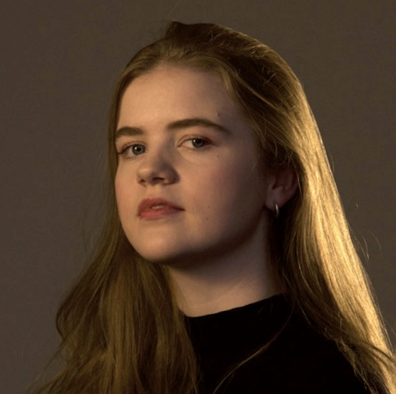
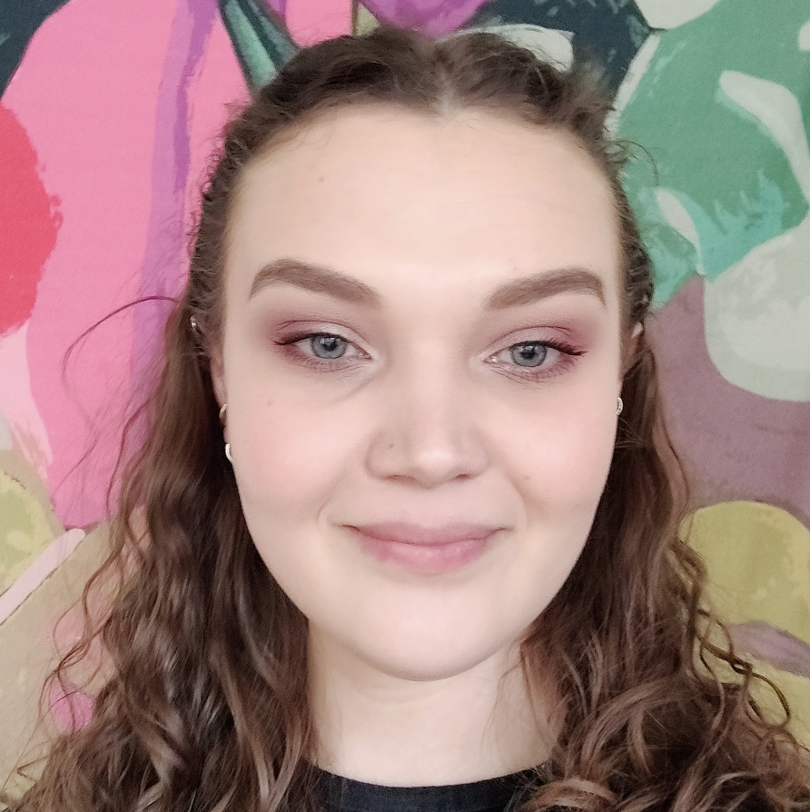

Goal and motivation of project
Party Popper is an asymmetrical multiplayer experience where two players
collaborate with the joint goal to pop balloons. One player is in VR,
popping balloons with the weapon of their choice. The second player is
outside, sending balloons to the VR player through a web interface on a
tablet. The balloons contain a variation of visual and sonic experiences
which are revealed once they are popped. The second player steers the
experience for the VR player by choosing what kind of balloons will be
popped. The experience can be seen as both collaborative and competitive
– depending on the mindset of the players involved.
This
experience was created as a part of the course DH2413 Advanced Graphics
and Interaction in the autumn of 2022 and was displayed on Tekniska
Museet for user testing on November 2.
Graphics and interaction technologies used and developed
For the balloon explosion effects, the water, paint and confetti
balloons were created by using particle systems with particle collisions
to detect the point of intersection with the floor and walls in the
room. The deathstar and discoball were created in Blender and scripts
for adding new background music, turning of lights and creating rotation
and movement were added in Unity. The bouncy balls are spheres made in
Unity with physical material. All assets including the balloon residues,
like the paint splats, the objects in the room and the tools and weapons
used to interact with the balloons are created using Blender.
To increase the performance in relation to the repeated
instantiating and destroying of objects we used the object pool design
pattern and implemented our own object pool for all of the balloon
residues. We implemented our own shaders for the paint and water
explosion using the Universal Render Pipeline.
The
interaction of the outside user was created as a deployed website on
Heroku with a backend using Node.js which sends information about which
balloons to spawn to the VR interface using websockets.
The background music is from freesound.org. The balloon popping sounds
are licensed from Epidemic Sound. The Deathstar 3D asset is from
CGSheep, party banner 3D assets are from Robot Skeleton, the rug texture
is from Nobiax/Yughues, the skybox is from Avionx, and the floor texture
is from Innovana Games.
Challenges & Obstacles
We debated between using the HTC Vive and Qculus Quest 2 but decided on
the latter due to the full mobility afforded by not needing a cable
connection during gameplay. However, that presented a big challenge in
the trade off between performance and graphics. For example, our
graphical quality would have greatly increased by applying an
anti-aliasing filter, however after testing we decided against it since
it put too much pressure on the performance.
For version
control we used Github, however from our experience it does not work
great with Unity and we had quite a few merge conflicts throughout the
project.
One of our main goals was to expand the
VR-experience outside of the VR-environment by creating a cross-platform
experience with one player in VR and another on a tablet. A big
challenge was therefore to provide an equally immersive and fun
experience for both players. In line with Lee, Kim and Kim (2019) we
tried to achieve this by defining clear roles for each of the players
based on our core concept of a children's party. The tablet user could
be imagined to be a friend or sibling and has an authorial role where
they control the balloons in the VR-environment. Whilst the VR-player is
the birthday person that in the aftermath of their party is popping the
balloons, possibly happy with their party or angry with the presents
received.
Lessons learned
As previously mentioned one of the major aspects for us to keep in mind
when developing Party Popper was the performance. We learnt different
aspects that put a lot of pressure on the performance like having
shadows in the scene, but also different methods to increase the
performance like using the object pool design pattern.
During our testing we learned of the importance of not hard
coding anything. For example, when we tested on children at Tekniska we
quickly realized that the height of the balloons were out of reach for
children and had to quickly change this. Also, it is important to have a
lot of space when testing VR projects as users tend to forget about
their surroundings.
It is important to formulate a goal
early but to not be too fixated on that idea. Initially, we aimed at
making a creative experience where the room was a white canvas for the
user to express themselves with the different popped materials. However,
we realized early on that interacting with the balloons, like boxing
them, was more fun than the mark they left behind. This made us
brainstorm new types of weapons and interactions that could be done with
the balloons. We also left the idea that everything inside the balloons
had to leave a mark and instead implemented things that disappeared
after a while, like the disco balloon. Changing the room from a
completely white space to a home environment with a few party
decorations also put the user in a context so that we didn’t have to
explain the setting. Our idea had evolved from being an artistic
expression to just creating a fun experience where you can make a mess,
partly controlled by the outside participant.
Agnes Shutrick
agnesben@kth.se
water explosion, development of websites, balloon physics

Maria Jacobson
majacobs@kth.se
bouncy ball explosion, UI design, cactus weapon
Ebba Rovig
rovig@kth.se
disco explosion, sword, boxing glove, magnet, balloon interaction
Erik Meurk
emeurk@kth.se
deathstar explosion, connection of VR-headset, VR-environment, balloon

Amanda Lindqvist
amlindqv@kth.se
paint explosion, object pool, server and websocket connection, balloon
generator